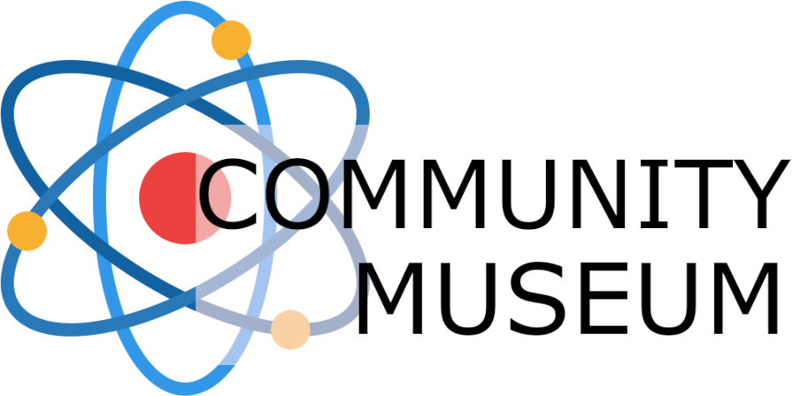

Noroff Projects
SquareEyes is a mockup of a streaming platform for that connect indie creators directly with consumers. It contains a local storage login and profile, movie browsing and previews.
HTML, CSS, JS.
Soilmates is a blogsite with a wp-database that displays information about houseplants.
HTML, CSS, JS.

A Community museum who focuses on encouraging children and families to explore the world of science.
HTML, CSS, JS.